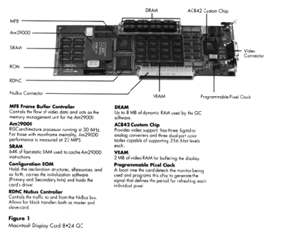
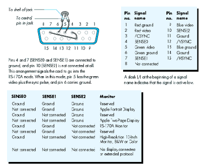
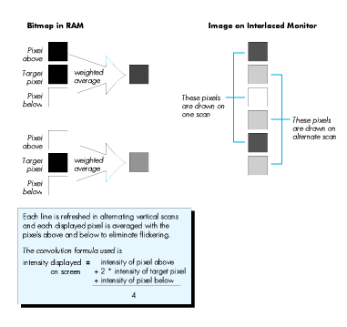
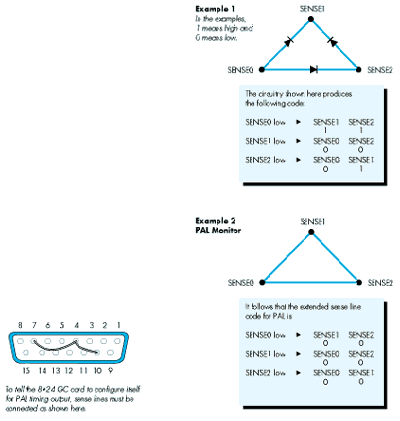
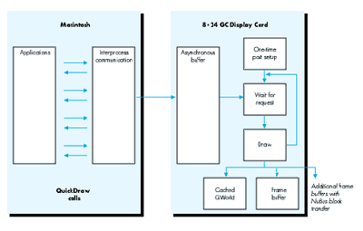
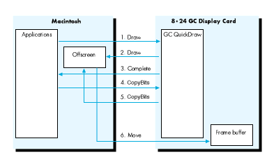
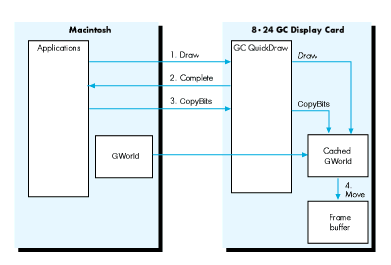
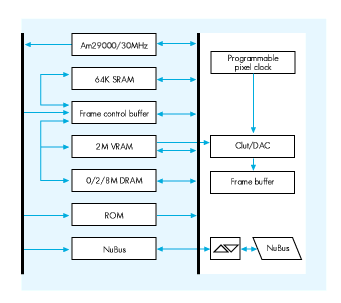

The Macintosh Display Card 8*24 GC, which supports monitors with depths up to 24
bits per pixel, allows use of a special version of 32-Bit QuickDraw that improves
drawing performance on computers in the Macintosh II family. This article details the
new card's features, describes how third-party developers can make sure their
products are compatible, and tells how to take advantage of the card and its software.
Since the invention of the first computer, users and developers have been complaining
about the amount of memory available, the speed of the machine, or the number of
things that could be done at the same time. (Do you remember when 16K was
considered a lot of memory? Of course not.)
The new Macintosh Display Card 8*24 GC addresses the perennial issue of speed,
specifically the speed with which the Macintosh executes drawing commands. With its
on-board processor and accompanying software, the new 8*24 GC card can execute
QuickDraw TM commands from 5 to 30 times faster than standard 32-Bit QuickDraw.
The Macintosh Display Card 8*24 GC has two independent components: the circuitry
that controls the display and the hardware and software that accelerate 32-Bit
QuickDraw.
DISPLAY NUTS AND BOLTS
We'll start with the display circuitry of the Macintosh Display Card 8*24 GC, which
closely matches the behavior of the Macintosh Display Card 8*24. Figure 1 shows the
principal components.

Figure 1Macintosh Display Card 8*24 GC
MFB Frame Buffer Controller Controls the flow of video data and acts as the
memory management unit for the Am29000.
Am29000 RISC-architecture processor running at 30 MHz. For those with
mainframe mentality, Am29000 performance is measured at 22 MIPS.
SRAM 64K of fast static RAM used to cache Am29000 instructions.
Configuration ROM Holds the declaration structures, sResources, and so forth;
carries the initialization software (Primary and Secondary Inits) and holds the card's
driver.
RDNC NuBus Controller Controls the traffic to and from the NuBus bus. Allows for
block transfers both as master and slave card.
DRAM Up to 8 MB of dynamic RAM used by the GC software.
AC842 Custom Chip Provides video support; has three digital-to-analog
converters and three dual-port color tables capable of supporting 256 8-bit levels
each.
VRAM 2 MB of video RAM for buffering the display.
Programmable Pixel Clock At boot time the card detects the monitor being used
and programs this chip to generate the signal that defines the period for refreshing
each individual pixel.
MONITOR SUPPORT
The new card supports all Apple monitors, including the Apple 13-Inch (B/W &
Color) monitor, the Apple Portrait Display, and the Apple Two-Page Display.
The Macintosh Display Card 8*24 GC connects to a monitor through a DB-15
connector and, via the sense lines, detects the type of monitor to which it is connected.
At boot time the card senses the monitor and configures itself for it. Third
party-monitors with sense lines that are compatible with Apple standards should work
as well. One important difference between the 8*24 GC card and its companion
Macintosh Display Card 8*24 is that the 8*24 GC does not fall back into a dormant
state when it finds no monitor connected during boot time. To allow for cases when
users may want to have an 8*24 GC to accelerate output to other monitors, but don't
want to connect a monitor to the card, the 8*24 GC card remains active, allowing
8*24 GC software to operate.
DEPTH SUPPORT
The 8*24 GC card supports depths of up to 8 bits for all monitors and 24-bit color for
the 13-inch monitor (and RS-170A and PAL monitors). The 8-bit-per-pixel support
for all Apple monitors implies, among other things, that true gray-scale output is
possible with both the Apple Portrait Display and the Apple Two-Page Display.
On a high-resolution (13-inch) monitor, the 8*24 GC card can display 24 bits of
color per pixel. As many people have noted (repeatedly), with this level of depth
support, applications can display more colors than most human eyes can discern.
NUBUS BLOCK TRANSFERS
The new card uses NuBus TM block transfers to accelerate display in other display
buffers present in the system. The Macintosh Display Card 8*24 GC is a NuBus master
card. When it detects other cards in the system that can accept block transfer calls, the
card uses block transfer mode to improve the performance of QuickDraw operations all
across the board. For video buffer cards that do not support block transfer mode, the
Macintosh Display Card 8*24 GC uses a special pseudo block transfer to optimize video
performance.
Hardware developers should take special interest in designing cards that will make use
of the block transfer mode, which will allow them to squeeze the most performance out
of NuBus. The 8*24 GC card can receive block transfers (acting as slave), so other
cards that may move data to the card's memory can move the data faster.
This is probably a good place to emphasize that, although you can have as many 8*24
GC boards as you want (or as many as you can afford), only one will function as a
graphics accelerator. At boot time QuickDraw GC uses the card in the lowest slot. Any
other 8*24 GC card becomes a glorified display card that is basically equivalent to the
Macintosh Display Card 8*24.
VIDEO SIGNALS
The RS-170A standard video signals produced by the 8*24 GC card allow you to
connect computers in the Macintosh II family to NTSC devices. Note, however, that the
RS-170A signals are not directly NTSC compatible. A box is necessary to produce
NTSC output that can be displayed on a standard television set or used along with other
video equipment such as a VCR. You can generate NTSC black-and-white output by
making a cable that uses the green video signal (which also carries a sync pulse), as
shown in Figure 2.

Figure 2 Simple NTSC B/W Connector
When displaying images Macintosh monitors refresh all the scan lines every time
they refresh the screen. This process is called noninterlaced video. RS-170A
monitors, which are interlaced devices, can scan only half the lines during each
vertical scan. Every other line is "repainted" every time the screen is refreshed.
Interlaced video is reasonably good for pictures and images in general, but really poor
for the display of thin horizontal lines, which seem to flicker when repainted only
every other scan. Because the Macintosh desktop is ordinarily full of such lines, the
desktop looks bad when displayed on interlaced devices. To overcome this problem, the
RS-170A output of the 8*24 GC card uses a technique called Apple convolution. The
technique is basically a filter that, before displaying a scan line, averages each line
with the line above and the line below. This filter is applied to all depths except direct
RGB (24 bits per pixel) when the card is operating in RS-170A mode (see Figure 3).

Figure 3 Convolution Filter Weights for Interlaced Video
PAL-COMPATIBLE SIGNALS
The Macintosh Display Card 8*24 GC also produces video signals that are compatible
with PAL timings. These signals can be used to produce PAL output to drive video
devices of the type used in most European countries.
The PAL-compatible signals have the same characteristics as the RS-170A output;
that is, the output is interlaced. For settings of 1 to 8 bits deep, a convolution filter is
applied before each line is produced. The PAL output mode is triggered through one of
the extended sense-line configurations, as described in the accompanying sidebar,
"Extended Sense Line Protocol."
The Sense Line Protocol was implemented when Apple recognized the need for a
mechanism that would allow a display card to identify the monitor connected to it. For
example, the Macintosh IIci display circuitry and the Macintosh 8*24 and 8*24 GC
display cards can now configure themselves according to the monitor that is connected
at boot time. The identification scheme works fine, but there is one problem. Three
sense lines limit the number of different monitors to seven. To overcome this
limitation, newer display cards use an extension to the sense line scheme that allows
for 28 new codes.
The extension is based on the following idea: When the display circuitry senses a
configuration that in the original scheme signals "no display connected" (in other
words, when all three sense lines are not connected), the card pulls down each sense
line, one by one, and reads back what the other lines return. To return a unique code,
the only requirement is that the sense lines be connected, in the cable or the monitor
itself, by wires or diodes. The beauty of this idea is that existing monitors are detected
correctly. Newer monitors can have their own encoding, and the circuitry for detecting
new monitors is relatively simple. Since there are no active components, adding the
encoding to new or existing monitors involves only a few inexpensive diodes and a little
wire.

Figure 4 PAL Connector
Software for the Macintosh Display Card 8*24 GC is made up of three main
components (see Figure 5).

Figure 5Software Architecture of the 8*24 GC Card
All these components come in a single file called 8*24 GC, which must be moved to the
System Folder as a single-step installation process. At boot time, after the "Welcome
to Macintosh" screen appears, the System looks for the file and, when it finds it,
installs the GC software as a transparent upgrade to 32-Bit QuickDraw. The
installation consists of loading the GC QuickDraw code into the card memory, loading
the GC kernel (GC OS) and initializing its structures, and loading and initializing the
IPC software. At INIT time, the rocket icon appears to indicate the presence of the GC
software in the System.
The 8*24 GC file contains a Control Panel device that allows the user to turn
acceleration on and off.
THE HAND IS QUICKER THAN THE EYE
A good way to start the discussion of GC QuickDraw is by separating QuickDraw calls
into two global classes. The first class consists of the "drawing" commands-- LineTo
and FrameRect, for example. The second class consists of the "state"-oriented calls,
such as SetPenState andRGBForeColor.
DRAWING CALLS
When 32-Bit QuickDraw is running the show, all drawing commands cause one of the
standard QuickDraw bottleneck procedures to be called. For example, calling PaintRect
causes StdRect to be called, and calling FillPoly ends up invoking StdPoly. "Under" the
bottleneck procedures, QuickDraw takes the commands and goes into a set of calls that
execute commands based on the type of drawing taking place. The lowest level for
QuickDraw is the code that actually draws to the devices affected by the drawing that is
being executed.The software for the 8*24 GC card takes effect at the level immediately
under the standard (bottleneck) procedures. If DrawChar is called, for example,
QuickDraw checks to see if the CQDProcs field in the current port is nil and, if so,
calls the StdText routine. At this point the IPC software intercepts the call and passes
the request to GC QuickDraw to initiate the accelerated process.
The previous paragraph points to an important fact: If an application completely
replaces the standard bottleneck procedures, it is effectively turning acceleration off.
Ordinarily standard bottleneck procedures are completely replaced only when driving
nondisplay devices such as printers, so there is no conflict with the acceleration
scheme. But some applications may bypass QuickDraw completely. By doing so they
forgo the benefits of accelerated QuickDraw.
When the IPC takes control, it handshakes with the card kernel, queues the command in
the asynchronous buffer, and returns control to the application. From the application's
point of view, the call to QuickDraw returns almost immediately and allows the
application to continue its execution. This parallelism reduces the apparent time it
takes QuickDraw to perform a drawing operation. Performance is also enhanced
because, while GC QuickDraw is performing the task, the application can be busy
calculating whatever is necessary for the next call.
When GC QuickDraw processes one command from the queue, two paths are available. If
the target is the current port, and if no changes have been made, GC QuickDraw goes
ahead and does the drawing; it has in its cache everything it needs. On the other hand, if
the target is a different port, or if the current port has changed, GC QuickDraw
proceeds to import the necessary parameters from main memory, set its own
structures, and finally do the actual drawing. In this discussion, we've used the
wordport, but the same principle applies to any change if the destination is aGWorld
or if theGDeviceassociated with the destination has changed.
The application can issue as many drawing commands as necessary. The IPC software
buffers them as needed, and GC QuickDraw completes all operations as quickly as it
can. The result is a completely asynchronous operation that gives applications the
fastest responsiveness and frees more processor time for application calculations
(applications have more time to think!).
There are some exceptions to the complete asynchronous scheme. Calls (such as
CopyBits) that involve not only the destination port/device combination, but also
different source and destination environments, make it necessary to flush the queue by
processing all pending operations and then performing the setup for the call. Once the
CopyBits call has been initiated, it is executed in parallel for optimum performance.
Software developers should note that using GWorlds to buffer PixMapsmakes CopyBits
intrinsically faster.
PARAMETER-CHANGING ("STATE") CALLS
The Macintosh Display Card 8*24 GC acceleration mechanism concerns itself mainly
with the drawing class of calls. Parameter-changing calls also have an important
effect on the overall performance of GC QuickDraw. The 8*24 GC software does not
work in its own environment, but heavily relies on the global structures that
QuickDraw keeps in main memory.
Instead of loading all the parameters with every call, GC QuickDraw caches all the data
structures it needs, but has to reload the data when changes are detected. Some of the
structures cached by GC QuickDraw are color tables, GDevices, GWorlds, PixPats,
Fonts, and Width Tables. Changing the pen or modifying the foreground color, for
example, invalidates the cached data. To squeeze the maximum out of the 8*24 GC card,
it is therefore important to group calls that draw elements with shared characteristics
(same color, same pattern, and so forth) instead of constantly changing port
parameters between drawing calls.
Changing directly any structure maintained and used by QuickDraw has always been a
clear and dangerous compatibility risk. The 8*24 GC software cannot detect changes to
the drawing environment unless you use the proper calls to accomplish such changes.
Not all QuickDraw calls are redirected when acceleration is enabled. Acceleration
affects only calls that either perform drawing operations or change the state of
QuickDraw structures. A list of such calls follows.
| SetPortBits | PortSsize | MovePortTo |
| SetOrigin | SetClip | ClipRect |
| StdLine | StdBits | StdText |
| StdRgn | StdArc | StdRRect |
| StdOval | StdRect | StdPoly |
| InitGDevice | DisposGDevice | AddSearch |
| DelSearch | AddComp | DelComp |
| DisposPixPat | CopyPixPat | MakeRGBPat |
| GWorldDispatch | HidePen | ShowPen |
| SetPenState | PenSize | PenMode |
| PenNormal | BackColor | ColorBit |
| OpenRgn | OpenPicture | OpenPoly |
| CopyRgn | SetRectRgn | RectRgn |
| OffsetRgn | InsetRgn | SectRgn |
| UnionRgn | DiffRgn | XorRgn |
| MapRgn | RGBForeColor | RGBBackColor |
| CopyPixMap | PenPixPat | BackPixPat |
| OpColor | HiliteColor | SetPortPix |
| PenPat | BackPat | CopyBits |
| DrawPicture | PMgrDispatch |
THE DEVELOPER POINT OF VIEW
The best feature of the Macintosh Display Card 8*24 GC is that application developers
have little to worry about when it comes to compatibility. You must put forth some
effort to do something in an application that GC QuickDraw cannot straighten out.
The one area that may require some rewriting is changing the way an application
allocates offscreen drawing environments (see "Braving Offscreen Worlds" in d e v e l
o p , issue 1). When a GDevice is created by hand (instead of by a call to NewGWorld),
all the structures are kept in main memory. Drawing to this environment and then
using CopyBits to display the result takes a greater number of NuBus transfers.
When a drawing operation that involves a GWorld occurs, GC QuickDraw immediately
caches the complete GWorld structure in the card's memory if the structure has not
yet been cached and if sufficient memory is available. (The card's optional DRAM kit is
an important addition for applications that work with large GWorlds.) When CopyBits
is called to display the results, the transfer of pixels to the screen driven by the 8*24
GC card is therefore really fast because there is no NuBus transfer. Even displaying
the image into other monitors benefits, especially when the other cards can accept
block transfers. Drawing operations to and from GWorlds can be executed in parallel.
This is not the case when drawing to or from old-style offscreens (see Figures 6 and
7).

Figure 6 Offscreen Old Style
When applications create offscreen environments by hand, GC QuickDraw
performance is affected because the data has to go many more times across NuBus. For
example, if an application draws to an offscreen port and then calls CopyBits to display
the results on the screen, the following happens:
Finally, QuickDraw operates more efficiently when thePixMap's rowBytesis a
multiple of four (long word alignment). It just happens that whenNewGWorld is called
it creates the offscreenPixMapin such a fashion, which increases the performance of
QuickDraw even when the offscreen buffer could be in main memory.

Figure 7 OffscreenGWorlds
When an application uses GWorlds to buffer the display, GC QuickDraw can use the
cached data in its memory and minimize NuBus traffic. The steps are as follows:
COMPATIBILITY ISSUES
As mentioned earlier, GC QuickDraw is port oriented, which suggests that to improve
performance it caches the port's structure in its entirety while drawing to a port. The
implication is that, if an application draws to different ports in an alternating fashion,
the application is forcing GC QuickDraw to flush its asynchronous buffer and move data
from main memory with each drawing command. To get the best performance from GC
QuickDraw, a good programming technique is to bundle all drawing operations that
affect a given port and complete them before changing ports to do some more drawing.
As noted earlier, it is also important to put together all the calls that affect a single
port and share characteristics such as color, pattern, and pen. The same admonition
applies to GWorlds because GC QuickDraw caches the GWorld into its memory when a
GWorld is the destination of a drawing operation. Changing GWorlds and drawing to
each one in rapid succession means that GC QuickDraw has to keep flushing its
asynchronous buffer and moving the necessary data from memory, which could imply
copying the new GWorld, including its PixMap (and 32-bit PixMaps can be a lot of
bytes to move).
BOTTLENECKS AND STRUCTURE CHANGES
As mentioned earlier, two areas make life difficult for an application running under GC
QuickDraw. These areas are replacing the bottleneck procedures and changing
QuickDraw structures directly.
Replacing bottleneck procedures. Replacing the standard bottleneck procedures
is a time-honored tradition in the Macintosh world. The problem is that, if an
application replaces a standard procedure and does not end up calling the original
default trap after it finishes its manipulations, the application is turning off
acceleration. Whenever possible--and if acceleration is desired--the application that
replaces the standard bottleneck procedures should call the original through the trap
dispatcher before returning to the main program.
Changing QuickDraw structures. The dangers of messing up with QuickDraw
structures directly are well known to all. Nevertheless, some applications still go
about happily changing structures. As a rule, you should call the ToolBox whenever
possible to change the state of the drawing environment. When the need is too strong,
use the calls that alert QuickDraw to the changes you're making.
TIMING
One interesting compatibility problem is not uniquely tied to the 8*24 GC card but has
to do with faster hardware in general. Some techniques still being used are direct
descendants of routines that were implemented for the 64K Macintosh. Now, with new
machines, these techniques simply run too fast.
One example is the "marching ants" technique of repeatedly callingFrameRect, with
each repetition shifting a pattern 1 bit to create a rippling frame on the screen. The
trick is still valid, but now causes a problem. In the time it took the Ol' Macintosh to
make four passes through theFrameRectloop, a newer Macintosh can make hundreds of
passes. With 8*24 GC acceleration on, the number is even greater. The result is that
the marching becomes jerky and annoying, and the cursor tends to disappear,
becauseHideCursoris being called to complete theFrameRectcall. The cursor appears
and disappears so quickly that it becomes invisible.
Do not time loops based on the performance of a given machine. For any form of
animation, use the Time Manager routines to time your application.
DRAWING DIRECTLY TO THE SCREEN
As a final admonition, do not draw directly to the screen . Drawing directly to the
screen puts any application at immediate compatibility risk with 32-Bit QuickDraw
and with all Apple and third-party 24-bit video cards. Drawing directly into the
8*24 GC card's display buffer will probably cause crashes and, at the minimum,
create weird artifacts if both the application and GC QuickDraw are drawing at the
same time.
PROGRAMMING THE Am29000 (NOPE!)
No, you can not program the Am29000 yourself. At the moment of this writing,
third-party applications cannot make direct use of the Am29000 processor for any
purpose.
The good news is that Apple recognizes the burning desires developers have to use the
Am29000 for more than accelerating QuickDraw, and future releases of the software
may provide such capability. So if you have a brilliant idea, Apple wants to know
about it. Although implementation details are not yet available, you can start by
sending a message that describes what you want to do and what kind of support you hope
the GC software can give you.
Send these and any other comments about programming the Am29000 on the 8*24 GC
card to AppleLink address FAST.GRAPHIC. Apple will get back to you when more
information is available.

Figure 8 Block Diagram of the 8*24 GC Card
NOTEWORTHY CALLS
One piece of software that has not been mentioned is the 8*24 GC cdev. With it users
can turn acceleration on and off through the Control Panel. Although turning
acceleration on and off should be left under the control of the user, you may want to
provide users with some kind of on/off dialog box or menu option. The Developer
Essentials disc (this issue) contains the GraphAccel.o file, an MPW library that
accomplishes this task. A sample FKey for turning acceleration on and off is included
with the library.
A new call was implemented with 32-Bit QuickDraw to allow an application to
determine whether a drawing operation initiated by it, and affecting a given port, has
been finished:
Function QDDone(pPtr: CGrafPtr): Boolean;
This call may be of especially good use if you're interested in timing each individual
call. It may also be of use in some animation situations, such as when you want to
initiate the next drawing action only after execution of a prior call has definitely
concluded.
QDDone returns FALSE if QuickDraw is in the process of drawing to pPtr and TRUE
when QuickDraw is done. If pPtr is nil, QDDone returns TRUE only when drawing to
all ports is completed. Note that when nil is passed to the call, background processes
such as clocks could prevent QDDone from ever returning TRUE.
Function QDDone(pPtr: CGrafPtr): Boolean;
INLINE $203C, $0004, $0013, $AB1D;{ Move.l #$00040013,D0
_QDOffscreen
}
FINALLY
The Macintosh Display Card 8*24 GC is Apple Engineering's response to the demands
for enhanced graphics performance for the Macintosh family of computers. Designers
of graphics- intensive applications now can concentrate on the algorithms that will
improve overall performance instead of using design resources to squeeze the last
drops of display speed, a choice which often compromises compatibility and ease of use.
Developers get the benefits of the 8*24 GC card with almost no programming hit.
Coding of special routines to achieve faster performance is unnecessary. Following old,
simple QuickDraw rules, developers can be assured of faster graphics performance at
no extra cost.
Applications can use the calls listed here to make QuickDraw and GC QuickDraw aware
of direct changes to forbidden structures.
PROCEDURE CTabChanged (ctab: CTabHandle) This call says, "Yes, I know I
shouldn't mess with a color table directly, but I did it, and I want to come clean." Use
SetEntries, or--even better--let the Palette Manager maintain the color table for
you.
PROCEDURE PixPatChanged (ppat: PixPatHandle);Use this call to say, "I admit I
modified the fields of a PixPat directly. Please fix the resulting mess for me." When
the modifications include changing the contents of the color table pointed to by
PixPat.patMap^^ .pmTable, you should also call CTabChanged.PenPixPat and
BackPixPat are better ways to install new patterns.
PROCEDURE PortChanged (port: GrafPtr);You should not modify any of the port
structures directly. But if you cannot control yourself, use this call to let QuickDraw
know what you have done.
If you modify either the PixPat or the color table associated with the port, you need to
call PixPatChangedand CTabChanged.
PROCEDURE GDeviceChanged (gdh: GDHandle);The best practice is to stay away
from the fields of any GDevice. But if you do change something, make this call to
rectify any problems. If you change the color table data in the device's PixMap, you
must also call CTabChanged.
GUILLERMO ORTIZ (in a rare interview): How long have you been with Apple and
why? Six years plus, and we've got good people and better beer busts.
Did you enjoy your sabbatical? Yes, the energy it restored lasted a full two weeks.
What's the best book you recently read? Between Past and Present by Neil A.
Silberman, a new look at archeological findings and discussion of how facts present and
past are seen according to the political/social currents of the times.
What're you reading now? Invisible Matter and the Fate of the Universe by Barry
Parker. He says that according to current knowledge, 90 percent of the matter of the
universe is missing. This leaves some possibilities:
Now a paid political announcement: "Contrary to the lies of his opponents, Mark Harlan
is not a crook. Trust me!" *
For More InformationDesigning Cards and Drivers for the Macintosh Family,
second edition, Addison-Wesley, 1990, available from APDA.
Macintosh Display Card 8*24 GC, Developer Notes, April 1990, available from
Developer Technical Publications.
Thanks to Our Technical Reviewers:Dave Cho, Casey King, Mark Krueger,
Jean-Charles Mourey